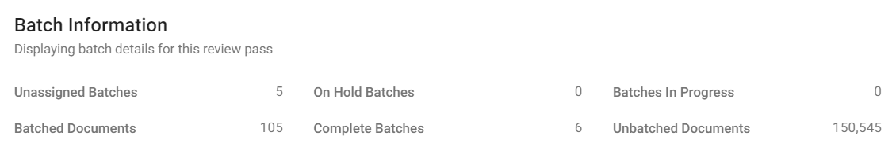
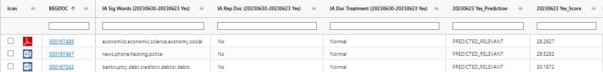

In
Review passes
allow you to manage the review. For example, a first pass review may be used to quickly identify documents as responsive versus non-responsive, while a privilege review pass would be used to identify documents for privilege and the specific privilege reason. Review passes are created and managed
case by case in the
Individual batches are assigned to individual reviewers. They allow you to efficiently divide the work, assign it to the correct individuals, and monitor progress. Individual batches are created as part of Review Pass creation.
There are two different types of review passes you can use: an Active Learning enabled review pass and an Active Learning disabled review pass. The difference between the two are how batches are created, organized, and prioritized for your reviewers.
For Active Learning enabled review passes, documents are batched and prioritized based on their relevancy, with documents predicted to have the highest relevancy scores batched higher in the queue than those predicted with lower relevancy scores. This ranking system can help accelerate your review.
For Active Learning disabled review passes, all documents are batched in advance. These documents are organized into batches not based on their predicted relevance, but through another method, such as by BEGDOC number or field value. Unlike with AL enabled review passes, these batches are not prioritized as reviewers proceed through the review pass.
Review passes are designed for
Active Learning (AL) enabled review passes are designed to streamline case review by predicting document relevancy as you review. In an AL enabled review pass, the documents predicted to have the highest relevancy scores are batched higher in the queue than those predicted with lower relevancy scores. As more and more documents are reviewed, the AL algorithm learns how to better assess the likely relevancy of all documents in the case, improving its predictive capabilities.
With

The followings fields will be populated in your review case with an
|
field |
description |
|
IA Significant Words (Review Pass/Tag Name) |
What the index gleaned from the documents. This will only populate on Normal documents. |
|
IA Rep Doc (Review Pass/Tag Name) |
This represents the cluster center. |
|
IA Doc Treatment (Review Pass/Tag Name) |
Normal, Short, Binary |
|
Prediction (Tag Name_Prediction) |
This is the predicted range of positive documents in the review pass. |
|
Score (Tag Name_Score) |
Between -100 - +100. The AL system's prediction for how relevant the document is, with a higher number indicating that the system more confidently predicts the document to be positive. |
The following is an example of fields created for a Review Pass named: 20230630, and the Review Purpose tag named: 20230623 Yes.

Active Learning (AL) disabled review passes are a more traditional method of batching documents for review, in which documents are batched out in the default sort order, and prioritization of batches, based on predicted relevancy, does not occur. All batches are created in advance.
|
|
Note: Even in an |
By default, documents in an AL disabled review pass are separated into batches in numerical order by image key (BEGDOC field). If you define a batch size of 100 documents, the first batch will contain the first 100 documents in the review pass, in order by image key.
The options described in the following paragraphs allow other methods of organization.
Field and Analytics Category
When a review pass is defined with the Batch by option, documents can be grouped by a selected field or analytics category.
For example, you might group documents based on the File Type field, in which case all like documents (.MSG, .DOC, .XLS, etc.) will be grouped into batches based on batch size.
Family Documents
The Family Field option, during review pass creation, ensures that all family documents are kept together in batches.
Typical fields include:
BEGATTACH: Keep a document and all of its attachments together.
MD5HASH: Keep a document and all duplicates together.
Field indicating email threading: Keep all documents in a specific email thread together.
When a family field is defined,
Batching Order
In addition to grouping by category and/or including family documents, documents can be sorted for batching by the content of up to three fields (Batching Order 1, 2, and 3). In this case, documents in the review pass are sorted by the selected field(s) and then organized into batches.
For example, you might sort by a date field, in which case, documents in the review pass will be sorted by date and batches created starting with the earliest date.
If you group documents by a category and also sort by date, batches will be based on the category field and organized secondarily by date.
If you want to include family documents and sort by a particular field, family documents must share the same sort-field value as their “parent” document. Otherwise, sorting will take precedence and family documents will not be kept together with their parent in a batch.
For example, if you include family documents and also sort by a date field, if document ABC-0001 has a date of 01/01/2014, then for its family documents to be included in its batch, all family documents must also have a date of 01/01/2014. If family documents do not all have the same date, then all documents will be organized into batches based on the date field.
Related Topics